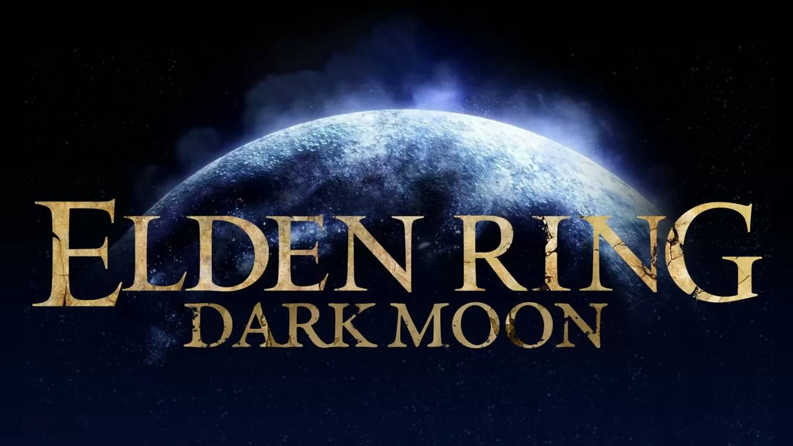
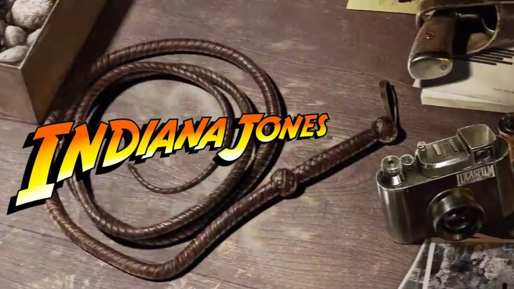
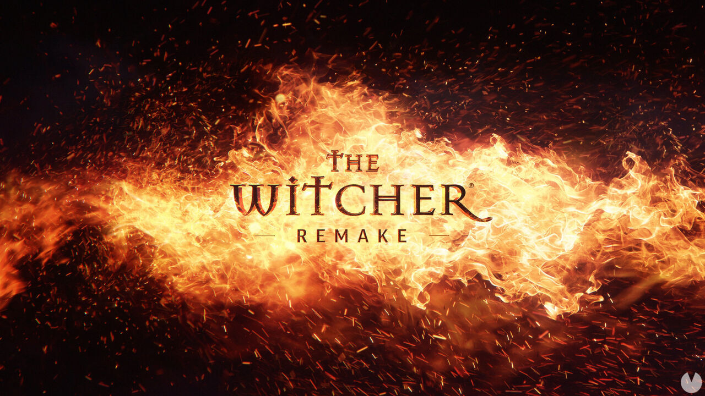

-NOTICIAS-
1/12/2022
Elden Ring recibe un mod que añade 11 nuevas clases, armas, armaduras y mucho más
Dylan Alexander, autor del mod conocido como Dark Moon, destaca que toma como base el mod de Shattered e incluye múltiples mejoras en el sistema de combate y en la jugabilidad.
Seguir leyendo...
30/11/2022
Indiana Jones de MachineGames es una 'mezcla de géneros única', afirma Todd Howard
Howard afirma que el juego de los encargados de Wolfenstein es 'una carta de amor a Indiana Jones' y que el equipo está realizando un 'trabajo increíble', aunque aún queda desarrollo por delante.
Seguir leyendo...
29/12/2022
The Witcher Remake no llegará antes del nuevo The Witcher 4
Los jugadores que deseaban amenizar la espera a The Witcher 4 con el remake del primer The Witcher tendrán que cambiar de planes o disfrutar de nuevo con The Witcher 3: Wild Hunt en su versión mejorada para nuevas consolas y PC -actualización que llega el 14 de diciembre-. CD Projekt RED ha confirmado que el nuevo The Witcher, nombre clave Polaris y que dará inicio a una nueva trilogía, llegará antes que el remake del original.
Seguir leyendo...